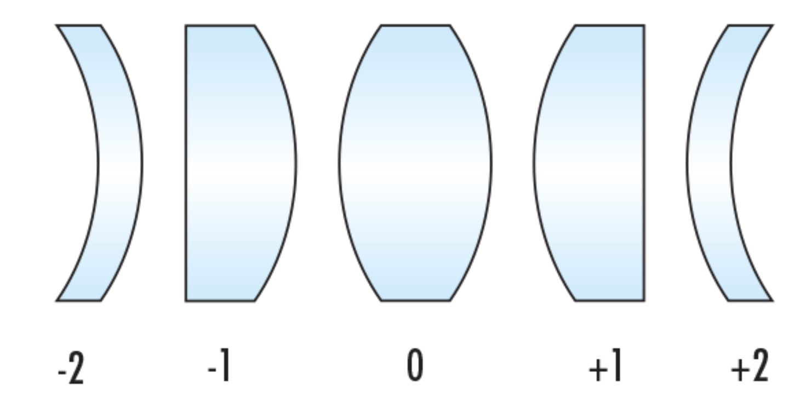

Ref : https://www.edmundoptics.co.kr/knowledge-center/application-notes/optics/advantages-of-using-meniscus-lenses-in-infrared-applications/
https://www.thefreedictionary.com/Meniscus+lens
Coddington shape factor
C=(R2+R1)/(R2−R1)

Meniscus, Plano-convex, Bi-convex, Convex-plano, Meniscus
Meniscus : C>1 or C<-1
Concavo-Convex lens